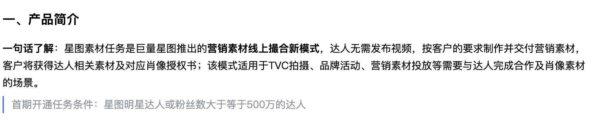
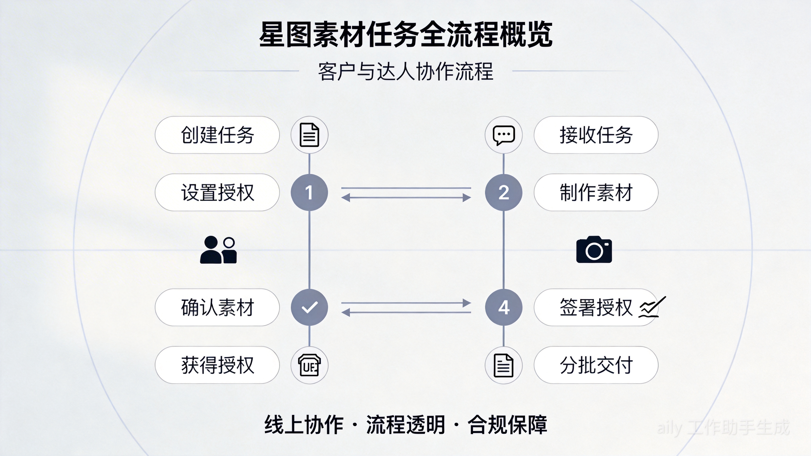
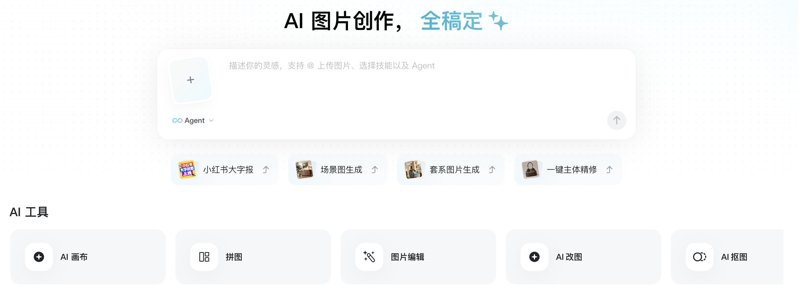
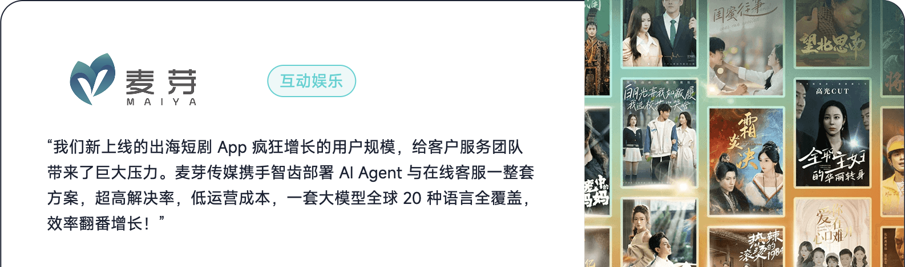
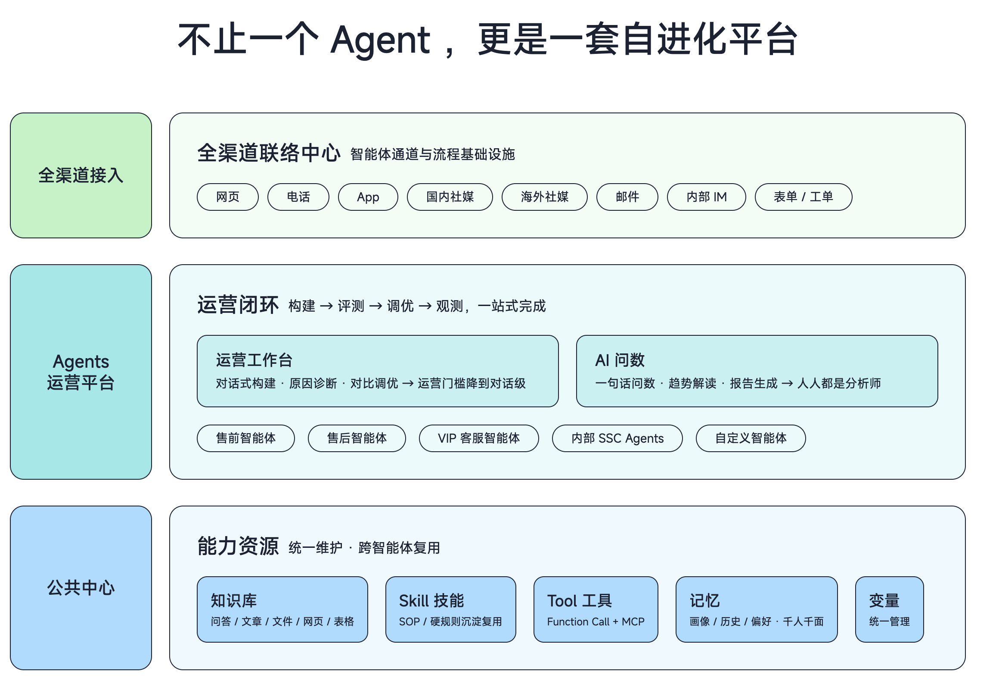

第六章｜AIGC应用与实践 · 第24次课 · 2 学时
AIGC变现：把AI技能做成可交付服务
00 知识回顾
上一课把客户需求、项目规则、网页代码和图片分开保存，练习了在已有网站上修改、让新会话继续接手。今天进一步回答：如果把这样的AI作品提供给别人，对方得到什么，需要提供哪些材料，修改到什么范围？
01 学习目标
本课通过三个真实网页案例，认识AI相关业务怎样向客户提供价值：按需求制作营销素材、提供可重复使用的AI设计工具、把AI客服接入企业工作。
观看案例时，重点理解三个区别：谁来提出需求，最后交付什么，交付后还要持续做哪些工作。 同样是处理内容或回答问题，提供一份成品、提供一个工具、提供一套业务系统，承担的工作并不相同。
02 基础概念
1｜七种交付方式：先看卖的是什么
AIGC变现，是把AI参与完成的工作转化为别人愿意付费的服务或产品。AI可以帮助写稿、处理图片、制作视频或开发软件，但能否获得收入，还取决于成果是否解决了对方的具体问题。例如，小店需要一份能照着拍摄的商品口播稿，你需要根据商品资料选择合适的表达、修改不准确的内容，并交付能直接使用的成稿。会操作工具是起点，把工作完成并说明服务范围，才能让对方判断这项服务是否值得购买。
本课用七个层级梳理不同的业务形态：从按件完成作品、持续经营内容，到提供工具、业务系统、开发接口，以及模型与计算资源。各层的区别主要在于服务对象、提供的能力和交付内容。这是一种便于比较的学习框架，不是统一的行业等级，也不表示越往后收入越高；个人或团队可以选择适合自身能力与资源的方式，同一家公司也可能同时开展多类业务。
“赛道”指服务所面向的领域，如电商、办公、短视频或本地生活；“层级”则帮助我们区分在这些领域中具体提供什么。同样服务一家门店，代写一份文案、持续运营内容、开发预约工具，就是不同的业务。下面从应用赛道、具体服务与产品、交付方式三个角度对照七层，理解每种方式需要完成哪些工作，再联系三个案例比较各类业务的交付与投入。
表一｜AIGC七层业务形态与主要应用赛道
| 层级 | 通俗理解 | 常见赛道：可以做哪个领域 |
|---|---|---|
| ① 按件服务 | 客户提要求，你完成一份作品 | 电商文案、门店设计、视频制作、求职与办公、商家网站 |
| ② 内容与受众 | 持续做自己的内容，吸引愿意看的人 | AI教程、商品讲解、旅游与科普、故事漫画、技能课程 |
| ③ 业务效果服务 | 持续帮客户经营，并观察约定目标的变化 | 电商运营、门店推广、客服改进、销售跟进 |
| ④ 标准化产品 | 做一个工具或资料包，让很多人反复使用 | 图片处理、写作与字幕工具、办公工具、设计应用、数字资料 |
| ⑤ 业务系统 | 把工具接进一家单位的实际工作 | 企业知识问答、客服工单、报价与订单、报表审批、多门店管理 |
| ⑥ API与组件 | 提供一个入口，让别人的程序调用你的能力 | 文字生成、图片与视频、语音、文字识别、资料检索、模型部署 |
| ⑦ 模型与算力 | 提供模型本身，或运行模型所需的计算设备与服务 | 语言与多模态模型、语音与视觉模型、行业适配、GPU设备与云端算力、运行加速 |
表二｜各层典型服务、产品与公司及网页实例
下列网页用于观察服务或产品的样子，不要求注册或购买。一个公司或平台可能涉及多层；看网页时，重点找这一行所说的服务或功能，不把整家公司只归进一层。
| 层级 | 具体服务或产品举例 | 典型公司、产品或参考网页 |
|---|---|---|
| ① 按件服务 | 商品口播稿、详情文案、海报与商品图、字幕配音与剪辑、简历和表格整理、小网站定制 | 猪八戒网：观察服务商介绍服务和接单的方式。第23课商家网站可作为这类成果的课堂示例。 |
| ② 内容与受众 | 连续更新的AI办公教程、商品使用指南、旅游科普栏目、故事漫画或短剧、系列技能课程 | 新片场：观察创作人的作品与内容栏目。展示作品或持续发布，不等于已经获得广告收入。 |
| ③ 业务效果服务 | 每月更新商品内容、运营门店活动、整理客服问答、帮助整理和跟进获授权的客户资料 | 巨量引擎营销平台介绍：观察营销服务怎样持续监测传播效果、改进推广。它是相关工具与服务的参考，不能据此认定某个客户的效果已达成。 |
| ④ 标准化产品 | 图片压缩与改尺寸工具、字幕与口播工具、简历排版与表格整理工具、可编辑模板与资料包、AI设计应用 | Canva Magic Studio：观察用户自己操作的AI写作与设计功能。第18课图片压缩工具是可继续完善的课堂原型。 |
| ⑤ 业务系统 | 员工知识问答助手、客服工单分配、报价与订单助手、报表审批、多门店内容管理 | 阿里云百炼智能体文档：看模型怎样连接知识库和工具。接好具体单位的资料、人员权限和业务，才形成适用的系统。 |
| ⑥ API与组件 | 生成文字、图片或视频的接口；语音转文字与文字转语音；识别文档；查找相关资料；模型运行工具包 | 火山方舟：观察文字、图片、视频与向量等接口；DeepSeek API入口：观察开发者接入方式。它们是例子，不表示每个平台都含本行所有功能。 |
| ⑦ 模型与算力 | 语言或多模态模型、语音与图像视频模型、行业模型适配；GPU服务器与集群、云端计算资源、训练和运行托管、运行加速软件 | DeepSeek：看模型研究；NVIDIA DGX：看AI计算设备与基础设施。模型和计算设备是两类产品。 |
表三｜各层交付成果、提供方式与收费约定
| 层级 | 对方最后拿到什么 | 怎样交付、怎样约定费用 |
|---|---|---|
| ① 按件服务 | 一份能用的稿件、图片、视频、表格或网站 | 交约定格式的文件，必要时附可编辑源文件和使用说明。按件、项目或工时约定费用，先说清数量和修改几轮。 |
| ② 内容与受众 | 持续可看的图文、视频、栏目或课程 | 按计划在账号、专栏或课程页更新。按平台条件和合作约定，通过广告、合作或付费内容取得收入；发布不等于有收入。 |
| ③ 业务效果服务 | 一段时间内的运营工作、执行记录和效果比较 | 按约定周期提供服务并说明数据变化。先约定看什么指标、统计多久、客户配合什么；是否按效果付费另行约定，不能保证销量。 |
| ④ 标准化产品 | 可以自己使用的工具、账号权限、模板或资料包 | 提供网页入口、安装包或下载文件，并说明用法、限制和维护范围。可以按次、订阅周期、版本或资料包约定费用。 |
| ⑤ 业务系统 | 能在本单位实际使用的系统和配套说明 | 接入授权资料，设置人员权限，测试业务流程，培训使用人员，并约定维护。按项目或服务周期约定费用，新增功能另说清范围。 |
| ⑥ API与组件 | 供程序调用的接口，或可放进软件的组件 | 提供接口地址、合法调用权限、说明文档和示例代码，讲清用量与报错方式。可按调用量或套餐约定费用，不随意转售他人账号与密钥。 |
| ⑦ 模型与算力 | 约定的模型文件或使用权，或者计算设备、计算资源与运行环境 | 模型按许可提供文件或使用方式；设备按约定交付，计算服务按资源与时长等计费。适配已有模型与从零研发要分清，使用现成模型不等于研发模型。 |
看三种交付对象：一份按件完成的稿件、持续更新的内容、可反复使用的工具。它们对应①②④，位置不表示收益高低。
2｜服务小样：让对方看见实际用途
服务小样是展示服务能力的一份具体成果。它要让对方判断“能否解决我的问题”：写稿服务展示能照着读的文稿，图片服务展示能用于目标场景的设计，工具或系统则通过可观察的功能与流程说明用途。只列软件名称或说“会用AI”，还不足以说明完成工作的能力。
三个案例中，可以从不同材料理解提供者的能力：
| 提供方式 | 可以观察什么 | 帮助判断什么 |
|---|---|---|
| 定制营销素材 | 作品及对应需求、制作规范 | 表达和格式是否适合约定用途，哪些内容可以修改 |
| AI设计工具 | 功能入口、示例图片、输入与处理方式 | 自己能用它完成哪些设计，哪些部分仍需自行选择和修改 |
| 企业AI客服 | 客户业务介绍、系统组成与服务流程 | 怎样接入真实咨询，AI与人工分别处理哪些工作 |
例子： 一张商品场景图能够展示图片服务的成果，但不能据此判断提供者已经交付了订单系统。展示材料要与准备提供的工作对应；功能入口、产品示例和实际客户系统也各自说明不同内容。
3｜服务范围：把交付内容与后续责任说清楚
服务范围说明这次包含哪些工作、客户需要配合什么、完成后还提供哪些支持。购买一张图片、使用一个设计工具、部署一套客服系统，对双方的要求不同。先说清范围，才便于确认交付，并判断后来的要求是否增加了工作。
| 案例类型 | 开始前需要说清 | 后续工作的重点 |
|---|---|---|
| 定制素材服务 | 素材用途、数量、格式、制作要求、修改轮次和使用授权 | 围绕原需求修改；换主题、加数量或扩大用途时重新说明范围 |
| 标准设计工具 | 可用功能、使用额度、导出条件和素材使用范围 | 用户自行选择和修改；提供者维护工具，定制设计是否另含要看约定 |
| 企业客服系统 | 接入哪些渠道和资料，哪些问题交给AI，怎样转给人工 | 更新知识与业务政策、管理使用权限、观察处理情况并维护系统 |
同样一句“再加一个功能”，工作量可能不同： 为一张海报增加一句已确认文案，是原成果的调整；让图片工具新增一种处理能力，需要开发与维护；让客服系统接入新的订单数据，还涉及业务接口、权限和流程。明确变化落在哪里，比笼统答应“都能做”更有用。
4｜时间与成本：看完成和持续提供服务的投入
AI生成很快，也只是工作中的一部分。定制服务还要理解需求、处理反馈与整理成品；工具要开发、运行和更新；企业系统还要接入资料、培训使用人员并持续维护。判断一项业务是否适合开展，要看从开始到交付，以及后续服务的全部投入。
| 业务类型 | 容易被忽略的投入 |
|---|---|
| 定制素材 | 沟通、选方向、修改、导出整理，以及工具和授权素材费用 |
| 标准工具 | 开发测试、服务器和模型调用、功能更新、用户支持 |
| 企业系统 | 资料整理、系统对接、权限配置、使用培训、运行观察和维护 |
课堂模拟试算： 假设一份定制服务收入60元，工具与素材分摊8元，扣除这两项费用后余52元。制作、沟通和修改共1小时，按时间折算为52元/小时；共2小时，则为26元/小时。两种情况收入相同，差别是总耗时。52元尚未计入人工等全部成本，金额只用于课堂计算，不是市场报价或收入预测。
把需求、修改与交付范围说明白，可以减少无效返工；工具或系统上线后，也要继续投入运行与维护。比较业务机会时，既要看能提供什么，也要看能否持续完成约定工作。
03 核心案例
三个案例分别对应七层中的①按件服务、④标准化产品和⑤业务系统。先观察公开网页中的具体内容，再比较客户需求、交付与后续工作。
案例一｜定制营销素材：客户购买一份约定成果
真实服务场景： 巨量星图《素材任务》介绍了客户委托创作者制作营销素材的合作方式。客户明确需求，创作者制作并上传素材，客户确认后按流程取得相应成果和约定授权。该任务形态不要求创作者在自己的账号发布视频，素材制作与账号发布是不同的工作。

从产品介绍中看客户购买的对象：按要求制作的营销素材，以及约定的使用授权。页面同时列有任务准入条件。
从需求到交付，双方分别完成什么
| 环节 | 客户与创作者的工作 | 为什么需要这一步 |
|---|---|---|
| 说明需求 | 明确素材规范、用途及合作要求 | 让创作者知道要完成什么，便于后续确认 |
| 制作与提交 | 创作者按需求制作，按约定节点上传 | 让客户看到可以确认的具体成果 |
| 确认与调整 | 客户查看素材，按任务流程确认或提出修改 | 判断成果是否符合原要求 |
| 取得成果与授权 | 按约定取得素材；涉及肖像授权时完成对应文件 | 说明素材怎样使用，交付包含哪些内容 |

对照左右两侧：客户提出需求并确认成果，创作者完成制作与提交；文件交付和授权也在合作流程中。
这项服务的价值： 客户不用亲自完成全部制作，但需要给清楚需求、参与确认。创作者交付的是符合具体用途的成果，并承担相应沟通和修改工作。它对应①；开发者提供的生成工具则是另一种产品。
联系AIGC： 在获得必要素材使用许可的前提下，AI可用于辅助构思、文案或图像处理，最终仍要交付符合需求的成果。上述文档说明的是委托制作流程，并未说明任务素材一定由AI完成。
页面所述任务有明星或粉丝量等准入条件，本例用于认识合作模式，不作为学生注册接单的要求。
案例二｜稿定AI图片创作：用户购买可重复使用的能力
真实产品场景： 稿定AI图片创作将场景图生成、图片编辑、AI改图、AI抠图等功能放在同一产品入口。用户不必每次委托别人制作，而是选用功能、提供素材和要求，再处理自己的图片。

看场景图生成、图片编辑、AI改图等入口：用户选择需要的能力，输入自己的素材或要求。
同一个工具，怎样服务不同使用者
| 使用者的需要 | 页面提供的能力入口 | 用户仍要完成的判断 |
|---|---|---|
| 给商品换一个展示场景 | 场景图生成、换背景 | 场景是否适合用途，商品外观是否保留 |
| 处理图片中的主体 | AI抠图、图片编辑 | 主体边缘、位置与细节是否合适 |
| 调整已有设计 | AI改图、AI画布 | 修改是否准确，文字、比例和画面是否可用 |
与案例一的区别： 委托制作时，客户说明需求，由创作者完成成果；使用稿定时，用户自己操作工具并选择结果。工具提供者需要维护共同功能、处理产品问题并更新服务，这对应④标准化产品。
用户是否登录、具有什么额度、能否按需要导出，以及素材允许怎样使用，要看对应功能和账号条件。能看到功能入口，不等于已经获得所有功能和使用权限。
案例三｜企业AI客服：把能力接入真实服务流程
真实客户场景： 智齿科技Agents页面的客户介绍中，麦芽传媒提到出海短剧App用户增长带来的客服压力，以及采用AI Agent与在线客服组合方案来服务多语言用户。企业需要处理持续到来的咨询，AI答复与人工服务要放在同一套工作安排中。

看麦芽的业务需要与采用的方案：出海短剧App的客户服务，需要AI Agent与在线客服协同。图中效率表述来自厂商客户介绍，不作为本课程的实测结论。
系统比单个问答工具多了什么
智齿公开产品页将多渠道接入、知识库与工具、运营工作台和人工服务等能力放在整体方案中。理解企业系统时，要把这些部分与实际业务连接起来：
| 系统中的工作 | 对客户服务有什么作用 |
|---|---|
| 接入咨询渠道 | 让网页、App等入口的客户可以获得服务 |
| 整理知识与业务政策 | 让答复依据企业当前资料，资料变化时继续更新 |
| 连接工具与业务流程 | 让需要查询或办理的事项有对应处理路径和权限 |
| AI与人工配合 | 复杂情况有人员继续处理，而非停在一段生成文字上 |
| 观察与维护 | 根据咨询情况改进知识、流程及服务安排 |

沿图看渠道接入、运营工作台与知识等资源：企业使用的系统需要多部分配合，后续也要持续维护。
与案例二的区别： 标准工具让许多人使用共同功能；企业系统还要适配某家企业的资料、咨询入口与处理流程。客户购买的是可用于实际工作的服务能力，这对应⑤，而非一个通用聊天入口。上表帮助理解整体产品组成，不等于麦芽案例逐项采用了所有功能。
三个案例放在一起：交付对象不同，工作也不同
| 比较角度 | ① 定制营销素材 | ④ 标准设计工具 | ⑤ 企业客服系统 |
|---|---|---|---|
| 客户需要什么 | 一份符合要求的具体素材 | 能自己反复处理图片的功能 | 持续处理客户咨询的服务体系 |
| 主要交付什么 | 约定素材及相应授权 | 工具入口、功能与约定使用权限 | 适配业务的系统与配套服务 |
| 谁完成日常使用 | 创作者制作，客户确认并使用成果 | 用户自己操作并选择结果 | 企业人员与AI系统协同 |
| 交付后还有什么工作 | 原约定内的修改与支持 | 工具运行、更新和用户支持 | 知识更新、业务调整和系统维护 |
从这三种方式认识业务机会，先看需要解决的问题和购买对象，再看自己能提供成果、工具还是系统，以及能承担哪些后续工作。
自主学习｜视频案例与GitHub项目
可以按兴趣选择一条路线：先看图片制作的过程，理解一份素材服务怎样完成；再看工具演示，了解怎样把制作能力变成可以反复使用的产品。对企业系统感兴趣，可以继续阅读项目介绍，认识知识库、工作流程与工具的组合方式。
先看视频：一张商品图可以怎样处理
| 视频与作者 | 建议关注的内容 |
|---|---|
| 抖音｜AI乔指南：商品图精修演示，约28秒 | 先看修改前后展示，再留意作者怎样描述图片处理要求。联系案例一：如果把图片处理作为服务，客户最终需要的是适合用途的成图，商品外观和细节也要对应原始材料。 |
| 哔哩哔哩｜晓墨AI视频：AI电商商品图制作教程，约8分22秒 | 观察商品场景图从材料到制作的过程，留意背景、构图与商品主体的关系。先理解制作思路，再根据自己熟悉的工具学习；视频中的软件步骤有一定设计基础要求。 |
再看产品与项目：把能力做成别人能用的工具
GitHub是分享项目代码与说明的网站。第一次看项目，可以先读README，也就是项目说明，再看演示和功能介绍，了解它解决什么问题，不必一开始就钻进代码。
| 资源入口 | 与本课的联系及选看重点 |
|---|---|
| 哔哩哔哩｜Zion无代码：一张商品图＋一句描述，生成营销场景图；配套官方图文教程 | 联系案例二，进阶选看。 看用户上传原图、填写场景要求、查看生成结果的使用流程，再看页面、生成能力和结果保存怎样连接。重点理解一个工具的组成；跟做时再按教程准备账号和所需服务。 |
| 小红书官方案例：换装小组件等AI应用介绍 | 联系案例二。 先看“换装小组件”：它接收商品图与人像图，生成试穿展示。页面附对应笔记和App体验入口，可以观察同一种图像处理能力怎样面向具体用途提供服务。此项是官方图文与笔记入口。 |
| GitHub｜LangGenius：Dify项目中文说明 | 联系案例三，进阶选看。 先读工作流、知识库和智能体的功能介绍，看看一个应用怎样把多种能力组合起来。Dify提供应用搭建基础；企业实际使用还需要接好本单位的资料、权限和业务流程。 |
这些外部资源需要联网，视频播放可能要求登录；小红书笔记或小组件可能需要在App中打开。可以先阅读公开的官方图文与项目说明，再按自己的基础选择是否继续跟做。
04 本课总结
| 本课认识 | 从案例中看到的区别 |
|---|---|
| 相同领域可以提供不同价值 | 可以完成一份作品，也可以提供共同工具，或把能力接入一家企业的业务 |
| 交付范围决定承担什么工作 | 素材要说清用途与授权，工具要说清功能与条件，系统要说清接入和维护 |
| AI能力需要与实际需要结合 | 会使用模型还要理解需求、判断结果，并完成与业务形态相应的工作 |
下节预告： 学习Ollama轻量模型部署，搭建离线复习助手，理解在本地运行已有模型需要哪些条件。